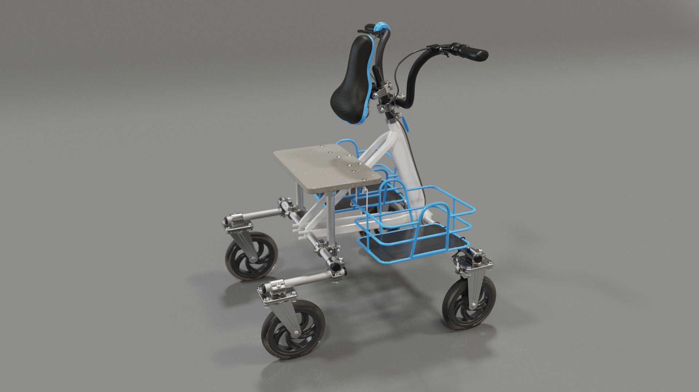

One scrapped shared bike becomes one four-wheel rollator, and almost every part that already has a useful shape is kept.
A rollator that you push, sit on and load, built around a bike frame rather than a new tube set.
The walker keeps the bike's welded rear triangle, seat post, handlebar with brake levers, saddle and baskets. New parts are limited to straight steel tubes, a plywood seat, catalogue clamps and four Ø200 mm casters.
Figure 1. Walking Again. The rear half of a Hellobike frame, turned back to front, carries the seat, handlebar and two baskets.